1 Maven Tools 3×3
Ctrl+Shift chords for a Maven/IDE set-up (B, U, I, Q, E and a Shift+Redo tile). The middle row is deliberately empty; empty tiles are drawn dim and send nothing.


 Classic interface
Classic interfaceThe direct-drawing interface of the branch feature/classic-ui: the same keymap, plain tiles and text labels, drawn straight onto the display. Captured from the devices over the serial SHOT command. The current interface (LVGL) is on the main page.
Ctrl+Shift chords for a Maven/IDE set-up (B, U, I, Q, E and a Shift+Redo tile). The middle row is deliberately empty; empty tiles are drawn dim and send nothing.
Hyper-key chords (Ctrl+Shift+Alt+Win) with W, X, P, O, T, N, B, E, Y and L. On Windows these open the Microsoft 365 apps; the tiles show app icons (Word, Excel, PowerPoint, Outlook, Teams, OneNote, browser, Explorer, lock).


Editing and navigation: Insert, Delete, Home, End, Page Up and Down, the four arrows, plus copy, paste, cut, undo and select-all. Tiles tagged +Shift send the shifted variant.
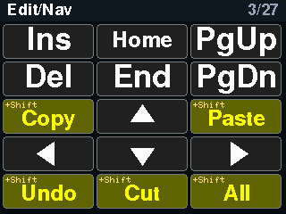
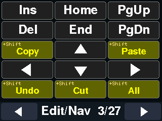
System keys: Esc, Menu, Print Screen, Pause, Scroll Lock and Num Lock, the Ctrl+Z/X/C/V clipboard set and Ctrl+F. The power key is drawn but not sent yet (the System report is still on the to-do list).


The plain function keys F1 to F10, with Esc and Enter in the bottom row. The numeric layout mirrors a keypad: 7-8-9 on top, 1-2-3 at the bottom.


F1 to F10 with the Meh modifier (Ctrl+Shift+Alt) so they can be bound to global shortcuts without clashing with applications.
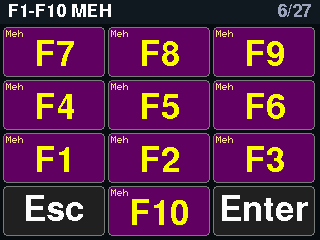

F1 to F10 with the Hyper modifier (Ctrl+Shift+Alt+Win), the other family of global-shortcut chords.


Function keys F11 to F20, laid out like the F1 to F10 page.
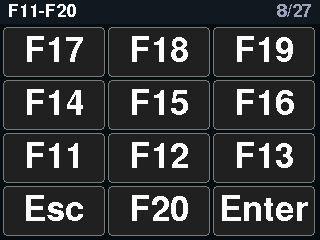

F11 to F20 with the Meh modifier.


F11 to F20 with the Hyper modifier.

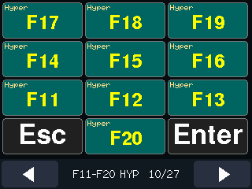
The rarely used F21 to F24 as four large tiles.


F21 to F24 with Meh.
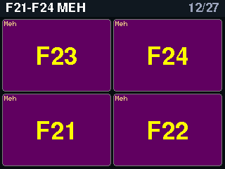

F21 to F24 with Hyper.


A symbol pad: digits 0 to 9, punctuation and the shifted symbols (! @ # $ and brackets), plus Esc, Tab, Backspace and Enter.


A complete numeric keypad: Num Lock, the four operators, digits, decimal point and keypad Enter, with Esc, Tab and Backspace underneath.


The International 1 to 9 keys that Japanese and some European layouts use. Their generated names are long, so the tiles are truncated; this is a known cosmetic issue.


Language and input keys: LANG1 to LANG5, Execute, Menu, the three lock keys and Enter.
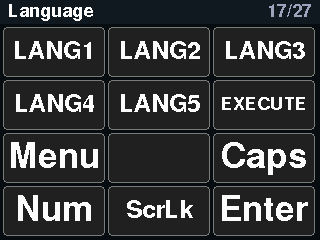

The three lock keys (Caps, Num, Scroll) as big tiles that send the plain key press. The Locks page at the end shows their state instead.


Media control: previous, play/pause, next, volume down, mute, volume up, stop, mail, file browser, and the system power, sleep and wake keys.


Microsoft Teams: mute, camera and hang up (Ctrl+Shift chords), arrows, Esc, Enter and Backspace.


Microsoft Outlook: new mail, reply all and find, arrows, Delete, Enter and Backspace.


PowerPoint: start the slideshow (F5), start from this slide (Shift+F5), Esc, arrows, Page Up/Down, Home and End.


Browser control: reload (F5), hard reload, reopen tab, F7, close tab, arrows, Home, End and full screen.
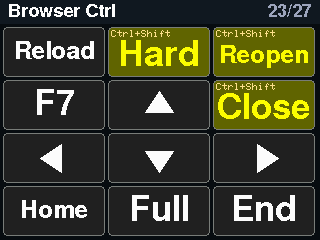

Debugger keys for an IDE: run/continue (F5), breakpoint (F9), step over (F10), step into (F11), step out (Shift+F11), restart, and the arrows.
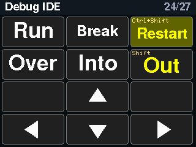

Application launchers from the consumer-control page: browser, file manager, mail, calendar, task manager and calculator.


Clipboard and editing: find, undo, cut, copy and paste with captions, plus Esc, Enter and Backspace.
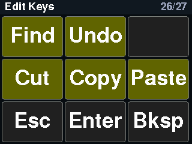

The Locks page: three large tiles for Caps, Num and Scroll Lock. Tapping one sends the key; the tile then shows ON or OFF as reported back by the host, and the LED bar lights a segment for each lock that is on (Caps orange, Num green, Scroll blue). On the Core2 the B button toggles this page; on the CoreS3 tap the title in the bottom bar.
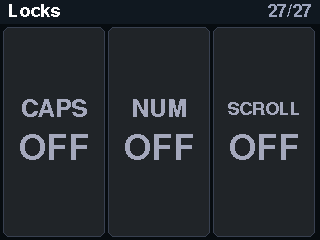